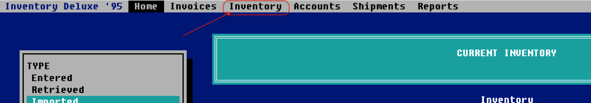
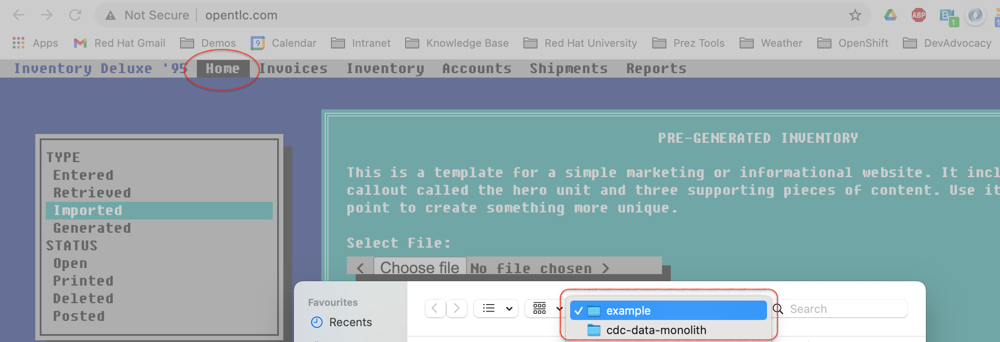
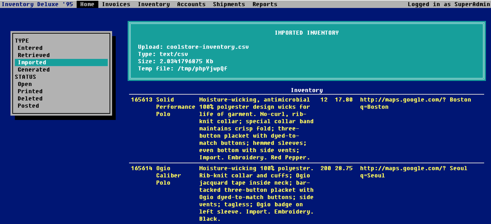

Walkthrough: Introduction to Legacy Application
Introduction to Legacy Application
Legacy Application Setup
Ahead of the demo, open the legacy application in full-screen mode to sell the notion that it’s a desktop app.
-
You can get the URL to the legacy application by running the following command in the demo shell:
LEGACY_URL=http://$(oc get route www -o jsonpath='{.spec.host}' -n ${PROJECT_PREFIX}-dev) echo ${LEGACY_URL} -
Open the echoed URL in a new browser window and make it fullscreen, then navigate from this desktop
Intro to Coolstore
-
You can find the URL of the coolstore by either clicking on it from the Topology View in Openshift or by running this command
COOLSTORE_URL=http://$(oc get route coolstore-ui -o jsonpath='{.spec.host}' -n cdc-coolstore) echo ${COOLSTORE_URL} -
Explain that the inventory comes from another system. A legacy system.
-
Swipe to the desktop where you setup the legacy app (as per here)
-
Show that the inventory database is currently empty by clicking on the "Inventory" navbar
 -
Show that the legacy system accepts an upload of inventory data by clicking on the
Homenavbar element -
Next click on
Choose filebutton which should open up a window like so: -
In the directory shown (
$DEMO_HOME/example) choose theinventory-initial.csvUnresolved include directive in modules/ROOT/pages/walkthrough/legacy.adoc - include::ROOT:example$inventory-initial.csv[] -
Click
Load File -
You should now see a screen of all the imported inventory.
Keep this tab open as we will revisit this page later

-
Reopen the
$COOLSTORE_URLand notice that inventory has not been updated still